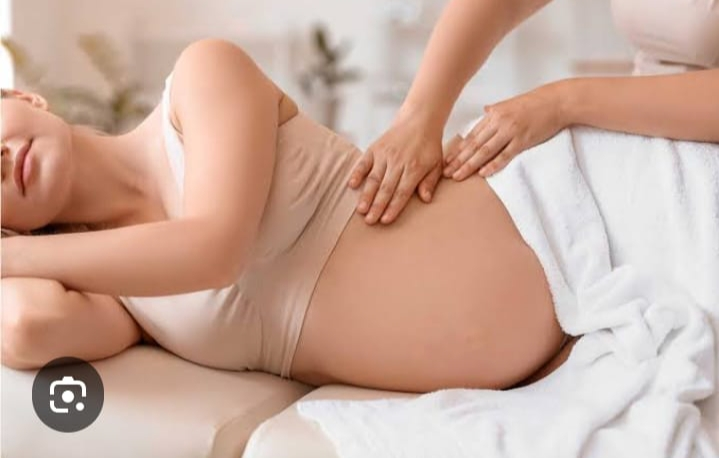
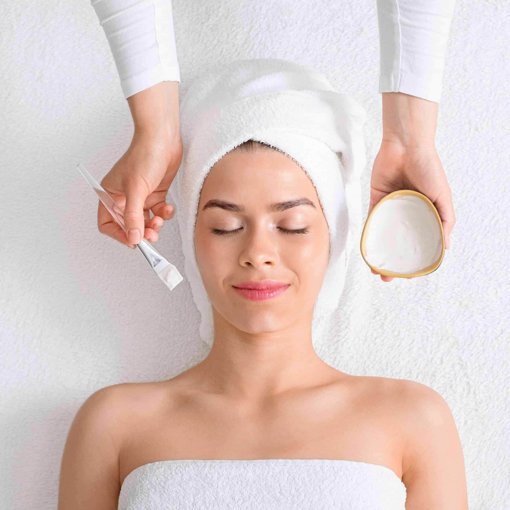
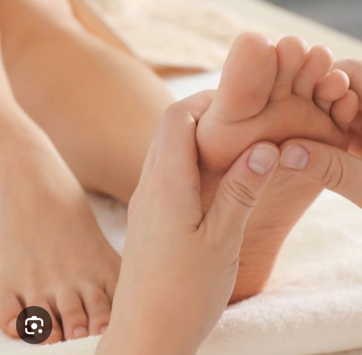
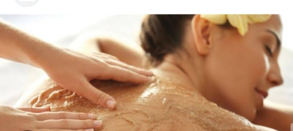
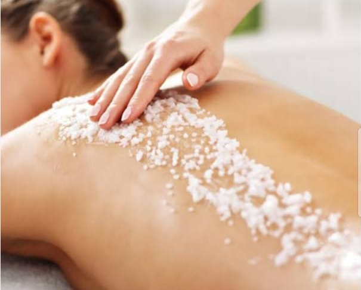
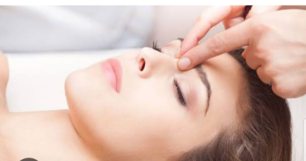
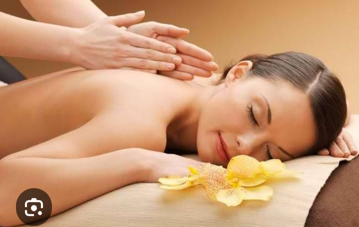
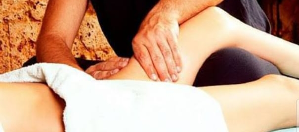
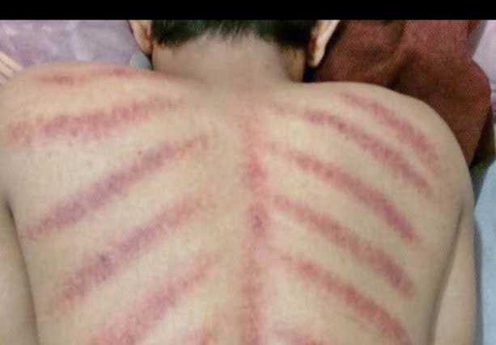
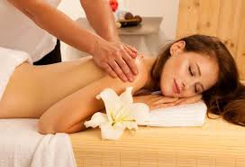

Salsabila Spa
☰



Pregnancy massage can help relieve complaints & discomfort experienced by pregnant women.
Benefits:
- Reduces back & waist pain.
- Reduces swelling in the legs (edema).
- Relieves shortness of breath.
- Improves blood circulation.
- Lowers blood pressure, reduces the risk of premature birth & reduces stress & anxiety levels.

Body Bleaching Massage is a skin treatment that combines massage with the use of skin whitening products. Its goal is to brighten, moisturize, and even out skin tone.

Reflexology Massage is an alternative therapy performed by applying pressure to specific points on the body, usually on the feet, hands, or ears.
Benefits:
- Relieves pain
- Reduces stress
- Calms the central nervous system
- Promotes relaxation
- Reduces fatigue
- Reduces anxiety

Lulur Massage is a type of spa treatment that uses high-quality scrubs instead of conventional massage oil.
Benefits:
- Brightens skin tone
- Provides relaxation
- Softens the skin
- Tightens the skin
- Removes dead skin cells

Scrub Massage is a body treatment that combines traditional massage with body scrubbing.
Benefits:
- Helps relieve muscle aches
- Nourishes the skin
- Removes dead skin cells

Face Acupressure is a facial care method that applies pressure to specific points on the face.
Benefits:
- Improves blood circulation
- Reduces facial muscle tension
- Minimizes pores
- Prevents premature aging
- Reduces under-eye bags
- Reduces dark spots

Benefits:
- Relieves muscle & joint pain
- Enhances relaxation
- Reduces stress
- Improves sleep quality

Vaginal therapy is a traditional/modern treatment for women's intimate organs.
Benefits:
- Improves women's health
- Tightens the vagina
- Enhances sexual experience

Scraping Massage is a combination of full-body massage and scraping therapy aimed at releasing trapped wind in the body.
Benefits:
- Helps relieve colds and fever
- Improves blood circulation
- Reduces muscle pain and tension
- Boosts immunity
- Provides deep relaxation

Body Whitening Massage is a skin treatment that combines full-body massage with the use of whitening products to help brighten and nourish the skin.
Benefits:
- Naturally brightens the skin
- Removes dead skin cells and dirt
- Moisturizes and nourishes the skin
- Enhances skin elasticity and health
- Provides relaxation and refreshment